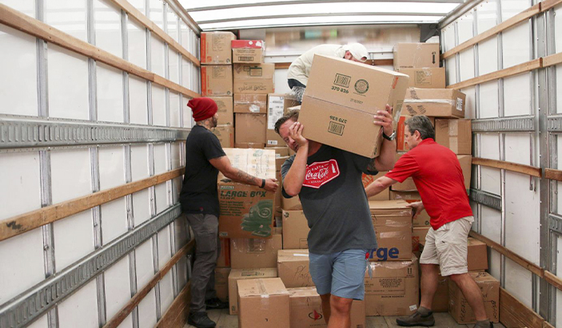
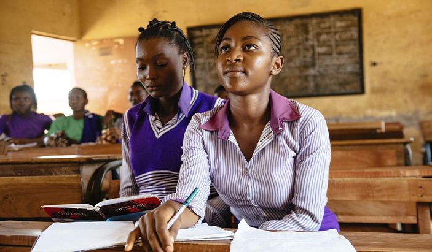
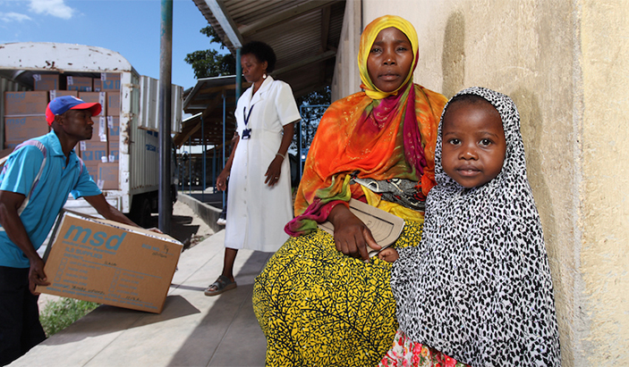
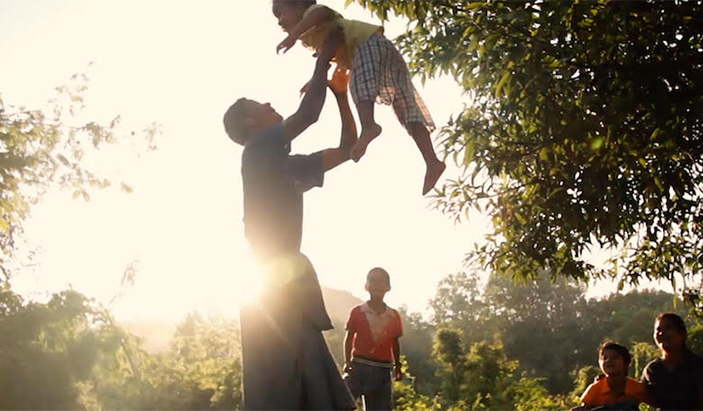
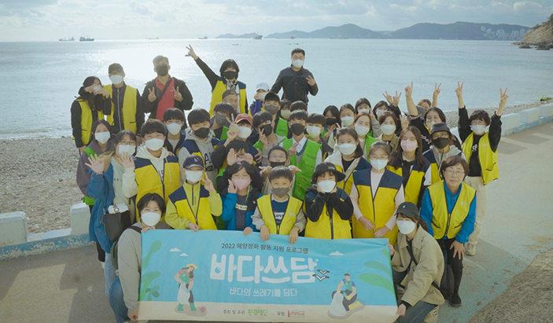

Communities
우리 제품 생산에 사용되는 플라스틱이 환경에 미치는 영향을 최소화하기 위해 다양한 목표를 설정하고 달성하기 위해 노력하고 있습니다.



코카-콜라가 가는 곳에 의약품도 보낸다! 아프리카 “라스트 마일(Last Mile)” 프로젝트
코카-콜라의 글로벌한 공급망과 유통 시스템을 활용해 전 세계에 의약품을 보급하는 프로젝트


우리가 사랑하는 바다를 깨끗하게 ‘쓰담’하는 코카-콜라의 바다쓰담 캠페인!
코카-콜라와 환경재단이 함께 진행된 2022 ’바다-쓰담’ 캠페인! 환경을 사랑하는 사람들이 모여 바다를 한껏 ‘쓰담’ 했던 이야기
-328x159.jpg)
-328x159.png)
-328x159.jpg)
_328x159.jpg)
-328x159.jpg)
-328x159.jpg)
-328x159.jpg)
-328x159.jpg)